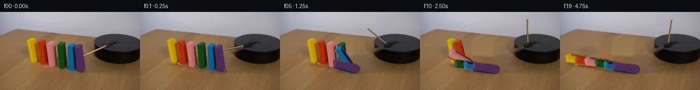

![首帧]()

Round 00
2026-11-04T21:49:04.788185+00:00像素候选变化代码 +232/−0inspection 更新
pixels 0e4057a555651efb · code c549774ff2dca372
查看本轮 generate.py 真实 diff
--- previous/generate.py
+++ current/generate.py
@@ -0,0 +1,232 @@
+from pathlib import Path
+import math
+
+import cv2
+import numpy as np
+from PIL import Image, ImageDraw, ImageFont
+
+from artifact_io import save
+
+
+ROOT = Path(__file__).resolve().parent
+W, H = 256, 144
+
+
+# Polygons follow the six photographed wooden pieces, including their shaded
+# right faces. Pivots are the lower-left table contacts used by the cascade.
+BLOCKS = [
+ {"name": "yellow", "poly": [(50, 51), (60, 48), (66, 51), (69, 92), (64, 97), (56, 96), (52, 92)], "pivot": (56, 96)},
+ {"name": "orange", "poly": [(64, 54), (76, 50), (82, 53), (86, 94), (82, 99), (74, 99), (68, 96)], "pivot": (74, 99)},
+ {"name": "pink", "poly": [(83, 58), (94, 53), (101, 56), (105, 97), (100, 103), (91, 102), (86, 98)], "pivot": (91, 102)},
+ {"name": "green", "poly": [(103, 61), (114, 55), (120, 57), (123, 99), (119, 104), (111, 105), (106, 101)], "pivot": (111, 105)},
+ {"name": "blue", "poly": [(122, 62), (131, 57), (137, 59), (141, 103), (136, 108), (129, 109), (125, 105)], "pivot": (129, 109)},
+ {"name": "purple", "poly": [(135, 65), (145, 59), (151, 61), (156, 105), (151, 111), (144, 110), (139, 106)], "pivot": (144, 110)},
+]
+
+
+# Each profile gives a restrained two-frame impact delay, rapid acceleration,
+# then a very small damped settle. Angles are clockwise-looking rotations of
+# an upright image sprite around its lower-left contact (positive in OpenCV).
+ANGLE_PROFILES = {
+ "purple": [0, 0, 7, 25, 49, 69, 77, 75, 76, 76, 76, 76, 76, 76, 76, 76, 76, 76, 76, 76],
+ "blue": [0, 0, 0, 0, 8, 29, 53, 71, 78, 75, 76, 76, 76, 76, 76, 76, 76, 76, 76, 76],
+ "green": [0, 0, 0, 0, 0, 0, 9, 31, 55, 72, 78, 75, 76, 76, 76, 76, 76, 76, 76, 76],
+ "pink": [0, 0, 0, 0, 0, 0, 0, 0, 8, 29, 53, 71, 78, 75, 76, 76, 76, 76, 76, 76],
+ "orange": [0, 0, 0, 0, 0, 0, 0, 0, 0, 0, 8, 28, 52, 70, 77, 75, 76, 76, 76, 76],
+ "yellow": [0, 0, 0, 0, 0, 0, 0, 0, 0, 0, 0, 0, 7, 26, 50, 69, 77, 75, 76, 76],
+}
+
+
+def polygon_mask(poly, antialias=False):
+ scale = 4 if antialias else 1
+ canvas = np.zeros((H * scale, W * scale), np.uint8)
+ pts = np.asarray(poly, np.int32) * scale
+ cv2.fillPoly(canvas, [pts], 255, lineType=cv2.LINE_AA)
+ if scale > 1:
+ canvas = cv2.resize(canvas, (W, H), interpolation=cv2.INTER_AREA)
+ return canvas
+
+
+def rotate_layer(rgb, alpha, pivot, angle):
+ matrix = cv2.getRotationMatrix2D(tuple(map(float, pivot)), float(angle), 1.0)
+ out_rgb = cv2.warpAffine(rgb, matrix, (W, H), flags=cv2.INTER_LINEAR,
+ borderMode=cv2.BORDER_CONSTANT, borderValue=(0, 0, 0))
+ out_a = cv2.warpAffine(alpha, matrix, (W, H), flags=cv2.INTER_LINEAR,
+ borderMode=cv2.BORDER_CONSTANT, borderValue=0)
+ return out_rgb, out_a
+
+
+def over(dst, src, alpha):
+ a = alpha.astype(np.float32)[..., None] / 255.0
+ return np.clip(src.astype(np.float32) * a + dst.astype(np.float32) * (1.0 - a), 0, 255).astype(np.uint8)
+
+
+def add_shadow(frame, alpha, pivot, angle):
+ # Project the posed silhouette shallowly onto the tabletop and shift it
+ # down/right, matching the soft upper-left source light.
+ py = float(pivot[1])
+ compression = 0.16 + 0.05 * (angle / 76.0)
+ projection = np.array([[1.0, 0.0, 3.0],
+ [0.0, compression, py * (1.0 - compression) + 2.0]], dtype=np.float32)
+ shadow = cv2.warpAffine(alpha, projection, (W, H), flags=cv2.INTER_LINEAR,
+ borderMode=cv2.BORDER_CONSTANT, borderValue=0)
+ shadow = cv2.GaussianBlur(shadow, (0, 0), 2.2)
+ strength = (shadow.astype(np.float32) / 255.0 * 0.27)[..., None]
+ return np.clip(frame.astype(np.float32) * (1.0 - strength), 0, 255).astype(np.uint8)
+
+
+def striker_layer(frame_index):
+ # The photographed ray is ~159 degrees in screen coordinates. Clockwise
+ # motion increases that angle. It sweeps across the purple top and then
+ # continues clear of the fallen row.
+ increments = [0, 9, 20, 33, 47, 61, 74, 86, 96, 104,
+ 110, 114, 117, 119, 120, 120, 120, 120, 120, 120]
+ theta = math.radians(158.9 + increments[frame_index])
+ pivot = np.array([197.0, 61.0])
+ length = 47.2
+ tip = pivot + length * np.array([math.cos(theta), math.sin(theta)])
… diff truncated; 145 more lines …